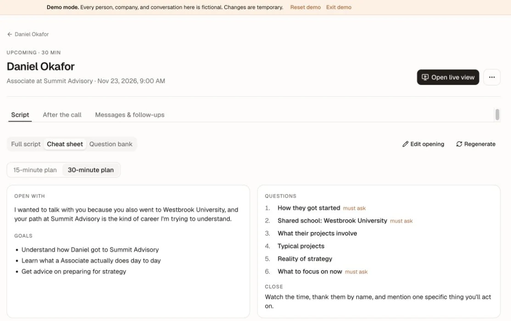
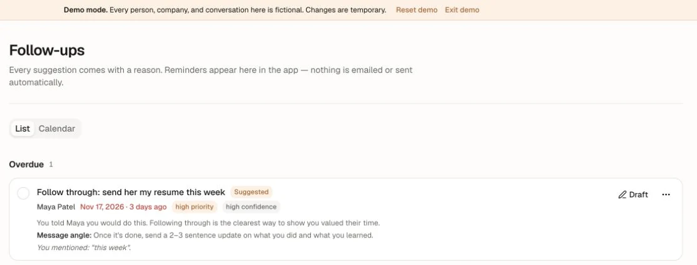
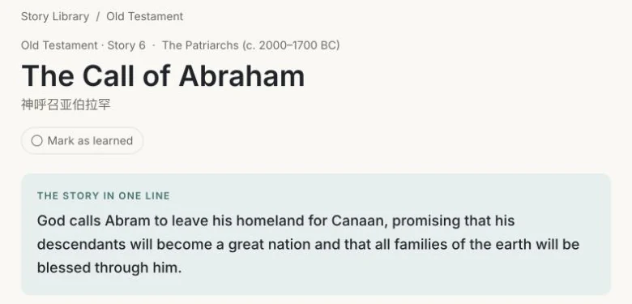

Yitong (Toby) Zheng 郑懿桐
I’m a BYU Global Supply Chain Management student preparing for a career in procurement. I learn by asking good questions and building practical tools.

- Procurement experience
- Procurement Intern at Caterpillar in Wuxi, China (2026): supplier visits and should-cost analysis
- Availability
- Mission in Houston, Dec 2026 – Dec 2028 · BYU graduation, Fall 2029 (expected)
During my mission, email me at yitong.zheng@missionary.org
Caterpillar · Summer 2026
Learning what a part should cost
My first time working in a corporate environment. I learned to ask good questions, communicate with confidence, and build good relationships.
- Go see
I visited suppliers to understand how cost-reduction opportunities work.
- Analyze
I built should-cost analyses for cutting, machining, welding and painting to compare supplier quotes with modeled costs and support negotiations.
- Make it reusable
I built three AI tools to help with future should-cost analysis. They gave my team a new perspective on using AI.
What else I worked on
- I learned the math behind cost models, and how to use Excel and AI tools for data analysis.
- I developed a risk-based supplier audit framework connecting drawings, PPAP documents and work instructions.
- I studied the safety-stock sheets different suppliers used and built one master template, with new calculations that flag stock at risk. The checks cover risks such as inventory coverage, lead time and data quality. I also automated receiving the sheets from email into SharePoint, and built an AI agent to analyze issues.
- Material
- Cutting
- Machining
- Welding
- Painting
- Overhead, margin
- Should-cost
- Supplier quote
The gap is where the questions start
Also at Caterpillar
I coordinated eight inspection-digitization pilots across four suppliers. They tested:
- Bluetooth torque tools
- Laser measurement
- Automated CMM reports
Personal project
CoffeeChat AI
- Problem
- Preparing for networking conversations in my second language was hard.
- What I built
- A tool that helps me prepare questions, keep a list of people to meet, and get follow-up advice and reminders.
- What I learned
- To prioritize useful questions instead of generating more of them. Short-call plans and “must ask” tags help me focus on what matters when time is limited.


See the follow-up view, and how it’s built


Next.js, TypeScript and Supabase, built with Claude Code.
Also built
Scripture Story Primer, a bilingual (中文 / English) site for learning scripture stories before reading the full text.


Mentoring
I love mentoring, and getting mentored.
As a BYU First-Year Experience peer mentor, I learned how to listen to, talk with and motivate others, and I practiced my English along the way.
More about mentoring
I gave presentations and one-on-one coaching, and tracked students’ goals in Salesforce.
A professor I worked with in UNIV 101 inspired me to strengthen my faith and set personal goals. That led to my decision to serve a mission.
My CliftonStrengths top five are Relator, Harmony, Deliberative, Restorative and Adaptability. I took the assessment as a freshman in an Authentic Leadership class, and it helps me understand my strengths and what to work on.
About
My path
- ChinaChildhood
- United StatesHigh school
- BYUProvo, UtahGlobal Supply Chain Management
- Wuxi, China2026Procurement Intern, Caterpillar
- HoustonDec 2026 – Dec 2028Mandarin-speaking mission
- BYUFall 2029Expected graduation
I speak Mandarin and English, and I’m learning Spanish. Outside work, I like trying new sports, traveling, and learning cultures through their food.
Books I’d love to talk about
- The Goal — Eliyahu M. Goldratt and Jeff Cox
- How to Win Friends and Influence People — Dale Carnegie
- Supercommunicators — Charles Duhigg
- Thinking, Fast and Slow — Daniel Kahneman
More books: How to Stop Worrying and Start Living (Dale Carnegie) · Take Command (Joe Hart and Michael A. Crom) · Getting to Yes (Roger Fisher, William Ury and Bruce Patton)
Read any of these? I’d love to compare notes.
Why BYU, and why a mission
I came to the U.S. for high school and chose BYU after a campus tour. I was afraid of religion at first, but my experiences and the people I met at BYU led me to join The Church of Jesus Christ of Latter-day Saints. Choosing to serve a mission was a difficult and personal decision.
Experience
- Caterpillar · Procurement Intern
- BYU · First-Year Experience Peer Mentor
- Big Carp Technology · E-Commerce Operations Intern
- SWORN.ai · AI-Driven Industry Strategist